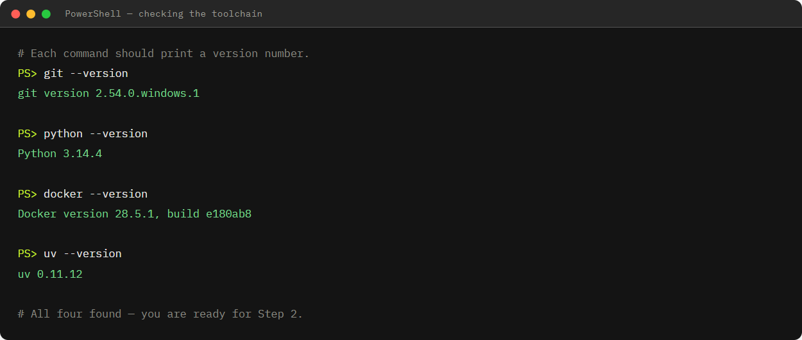
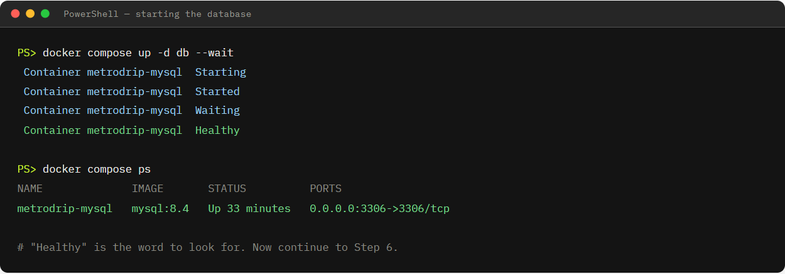
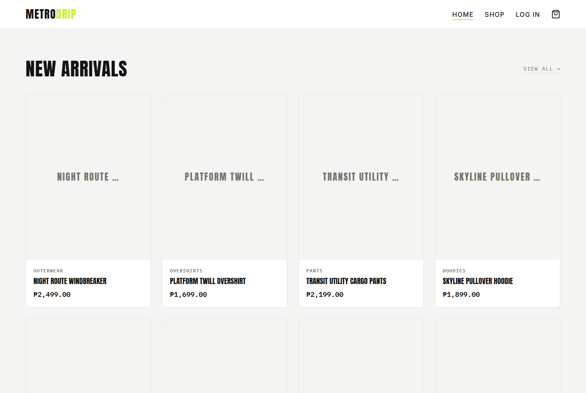
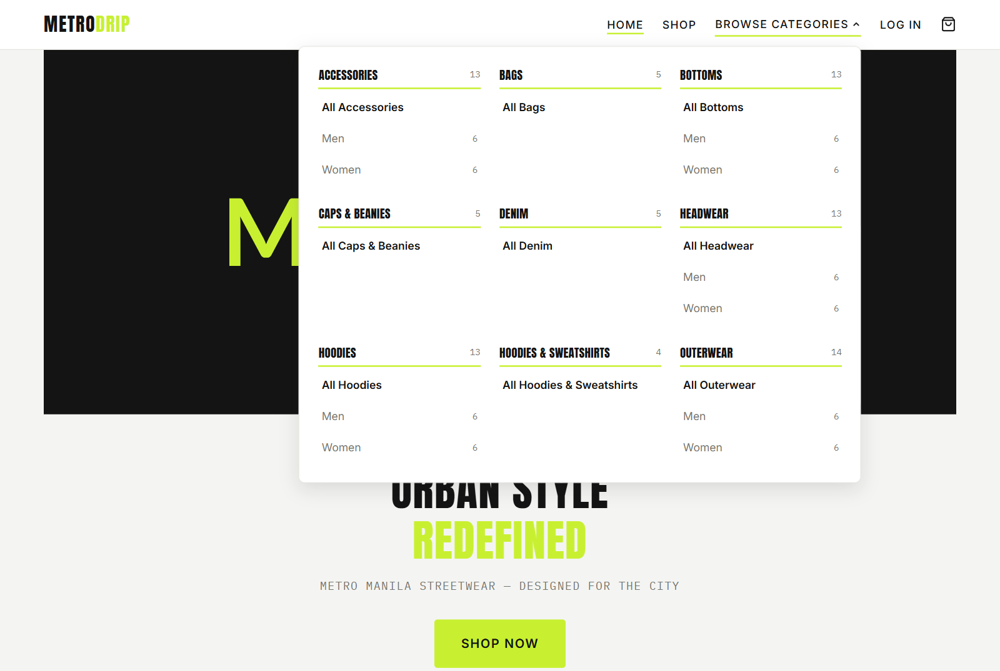
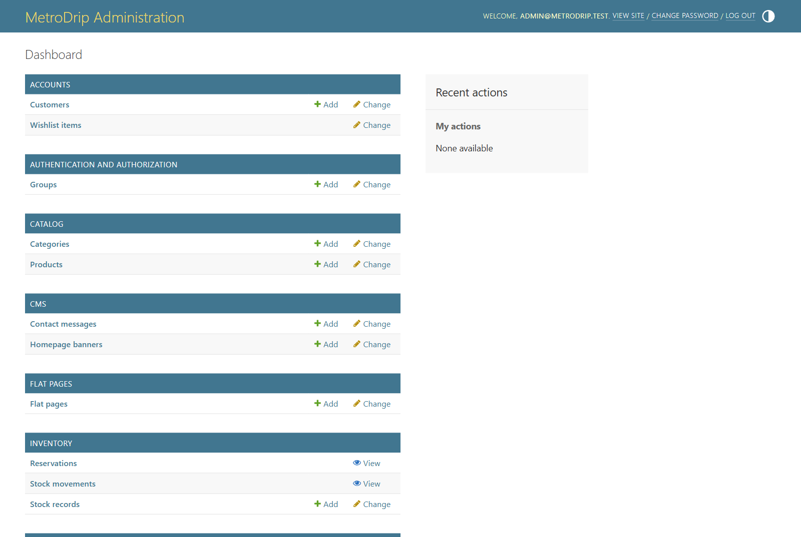
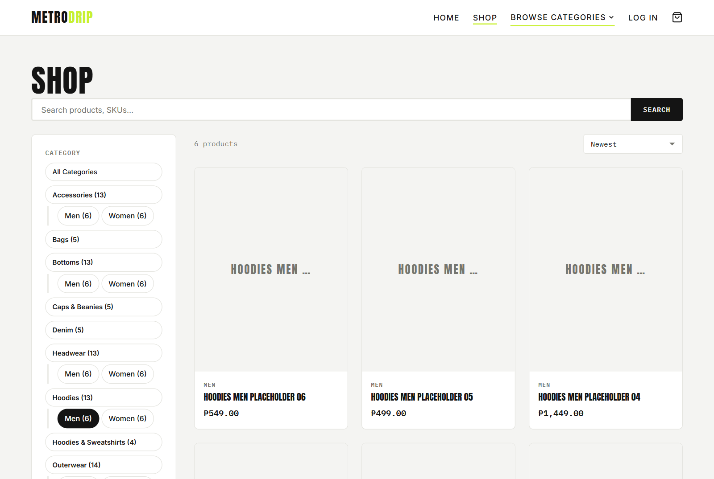
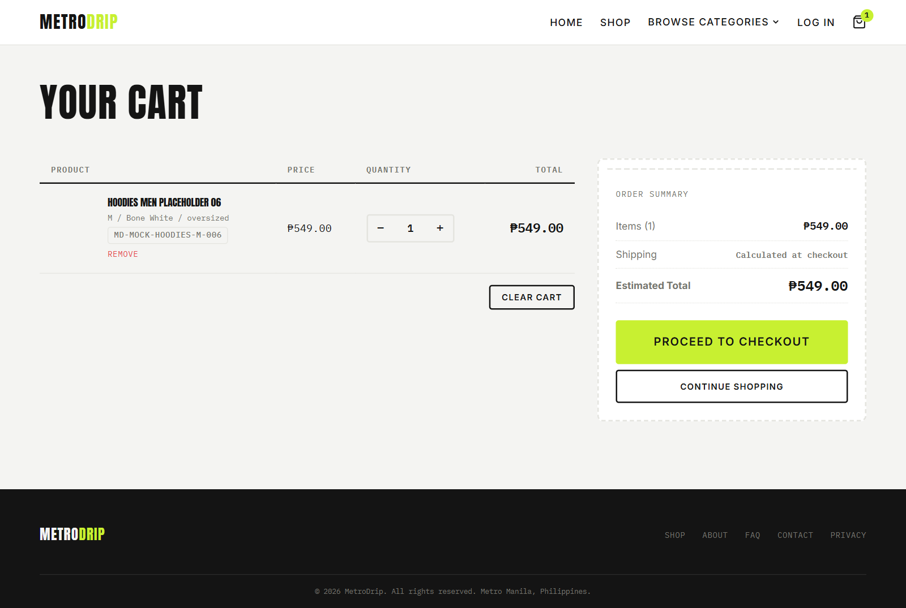
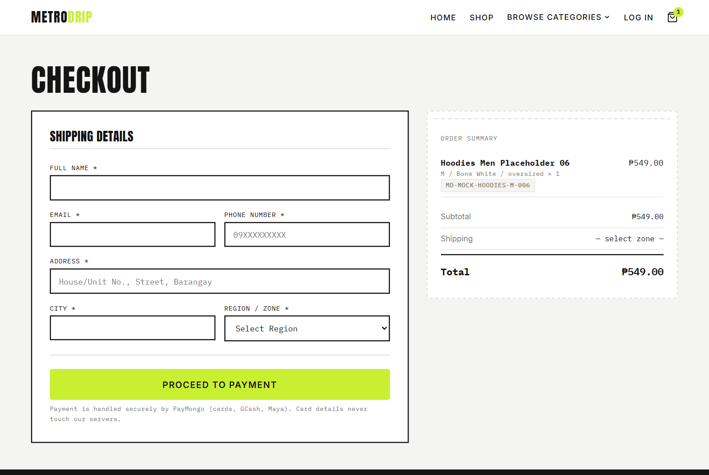
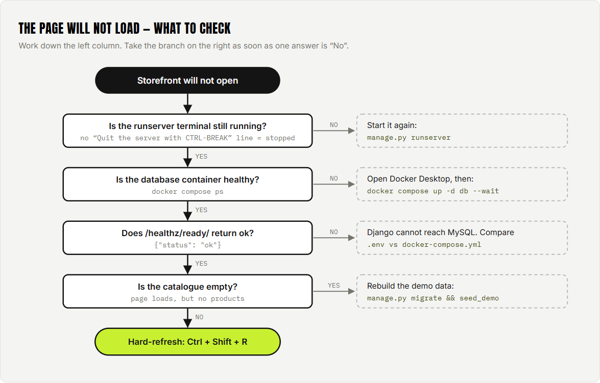

What you are about to build
When you finish this guide you will have two things running at the same time on your computer:
- A MySQL database running inside a Docker container. This stores products, orders, stock, and customers.
- A Django web server running directly on your machine. This serves the storefront at
http://127.0.0.1:8000/.
Your browser talks to Django, and Django talks to MySQL. That is the whole picture:
Installing MySQL directly on your computer is fiddly and different on every operating system. Docker gives everyone on the team the exact same database version and settings with one command, and you can delete it cleanly when you are done. You do not need to learn Docker to follow this guide — just three commands.
First time on a fresh machine: 30–45 minutes, mostly waiting for downloads.
Every time after that: about 30 seconds — see the cheat sheet.
Install the tools
You need four things. Install them in this order, and restart your terminal after each one so it picks up the new commands.
| Tool | Version | What it does |
|---|---|---|
| Git | any recent | Downloads the project code from GitHub. |
| Python | 3.14 | The language MetroDrip is written in. |
| Docker Desktop | 28+ | Runs the MySQL database in a container. |
| uv | any recent | Creates the Python environment and installs libraries. Much faster than pip. |
Windows
Download and run the installers:
- Git for Windows — accept the defaults.
- Python 3.14 — tick “Add python.exe to PATH” on the first screen. This is the single most common setup mistake.
- Docker Desktop — restart your computer when it asks.
Then open PowerShell and install uv:
powershell -ExecutionPolicy ByPass -c "irm https://astral.sh/uv/install.ps1 | iex"macOS
The easiest route is Homebrew. Open Terminal and run:
# Install Homebrew first if you do not have it.
/bin/bash -c "$(curl -fsSL https://raw.githubusercontent.com/Homebrew/install/HEAD/install.sh)"
# Then the tools.
brew install git python@3.14 uv
brew install --cask dockerOpen the Docker app from your Applications folder once, so it can finish setting itself up.
Linux (Debian / Ubuntu)
# Git and build basics.
sudo apt update && sudo apt install -y git curl
# Docker Engine and the Compose plugin.
curl -fsSL https://get.docker.com | sudo sh
sudo usermod -aG docker "$USER" # then log out and back in
# uv (it can install Python 3.14 for you in the next step).
curl -LsSf https://astral.sh/uv/install.sh | shThe usermod line lets you run Docker without sudo. You must log out and back in for it to take effect.
Check everything installed
Close your terminal, open a new one, and run these. Each should print a version number:
git --version
python --version
docker --version
uv --versiongit --version
python3 --version
docker --version
uv --versiongit --version
docker --version
uv --versionThe tool installed but your terminal does not know about it yet. Close every terminal window and open a fresh one. If it still fails on Windows, re-run the Python installer, choose Modify, and make sure “Add Python to environment variables” is ticked.

Get the code
Pick a folder you can find again — Documents is fine. Then clone the repository and move
into it. Every command from here on assumes you are inside the project folder.
git clone https://github.com/SecretlySpy/TIP_MetroDrip-Ecommerce.git
cd TIP_MetroDrip-EcommerceRun dirlsls and you should see manage.py, requirements.txt, and folders named apps and config.
Create the Python environment
A virtual environment is a private folder of Python libraries that belongs to this
project only. It stops MetroDrip's libraries from clashing with anything else on your computer.
We create one called .venv, then install everything the project needs into it.
uv venv .venv --python 3.14
uv pip install --python .venv/Scripts/python.exe -r requirements.txtuv venv .venv --python 3.14
uv pip install --python .venv/bin/python -r requirements.txtuv venv .venv --python 3.14
uv pip install --python .venv/bin/python -r requirements.txtThis downloads Django, the MySQL driver, and the rest. It takes a minute or two the first time.
We write out .venv/Scripts/python.venv/bin/python.venv/bin/python in full instead of “activating” the environment.
It is more typing, but it works identically in every terminal and removes a whole category of
“it works for me” problems. If you prefer, you can activate it once per terminal session:
.venv\Scripts\Activate.ps1 # PowerShellsource .venv/bin/activatesource .venv/bin/activate…after which plain python manage.py ... works.
Confirm it worked
.venv/Scripts/python --version
Python 3.14.4.venv/bin/python --version
Python 3.14.4.venv/bin/python --version
Python 3.14.4Create your configuration file
The project reads its settings — database password, secret key — from a file called .env.
That file is never committed to Git, because it holds secrets. A safe example is
provided, and its defaults already match the Docker database, so you can copy it as-is.
Copy-Item .env.example .envcp .env.example .envcp .env.example .env| Setting | Local value | Meaning |
|---|---|---|
DJANGO_SECRET_KEY | provided | Signs cookies and sessions. Fine for local use; a real deployment needs its own. |
MYSQL_DATABASE | metrodrip | Name of the database Django connects to. |
MYSQL_USER | metrodrip | Database username. |
MYSQL_PASSWORD | metrodrip | Database password. |
MYSQL_HOST | 127.0.0.1 | Your own machine — the Docker container publishes MySQL here. |
MYSQL_PORT | 3306 | The standard MySQL port. |
.env is already listed in .gitignore, so Git will ignore it. Do not force-add it,
and never paste real passwords or API keys into a public repository or a group chat.
Start the database
Make sure Docker Desktop is open and running first — look for the whale icon. Then start the MySQL container:
docker compose up -d db --waitReading that command:
up— create and start the container-d— “detached”, meaning it runs in the background and gives your terminal backdb— only the database service (the web app runs on your machine, not in Docker)--wait— pause until MySQL reports that it is genuinely ready for connections
You should see it finish with Healthy:
Container metrodrip-mysql Started
Container metrodrip-mysql Waiting
Container metrodrip-mysql HealthyDocker has to download the MySQL image (a few hundred MB) and initialise the database. Give it a couple of minutes. Every start after that is nearly instant.

docker compose ps confirms the
container is up and publishing port 3306.
Build the tables and load demo data
The database is running but completely empty. Two commands fix that: migrate creates the tables, and seed_demo fills them with sample products so there is something to look at.
.venv/Scripts/python manage.py migrate
.venv/Scripts/python manage.py seed_demo.venv/bin/python manage.py migrate
.venv/bin/python manage.py seed_demo.venv/bin/python manage.py migrate
.venv/bin/python manage.py seed_demo
On a second run you will see
Demo seed complete: categories=0, products=0, variants=0….
That is not an error. The seed is idempotent — it only reports how many rows it
newly created. Zero means the data was already there from a previous run, which is exactly
what should happen. Verify with the check in Step 9.
Fill the catalogue for category browsing
seed_demo gives you five products — enough to prove the app runs, but not enough to
exercise the category menu or pagination. A second command adds bulk placeholder stock:
# See the plan first — this writes nothing.
.venv/Scripts/python manage.py seed_mock_catalog --dry-run
# Create 100 placeholders, spread evenly across every subcategory.
.venv/Scripts/python manage.py seed_mock_catalog# See the plan first — this writes nothing.
.venv/bin/python manage.py seed_mock_catalog --dry-run
# Create 100 placeholders, spread evenly across every subcategory.
.venv/bin/python manage.py seed_mock_catalog# See the plan first — this writes nothing.
.venv/bin/python manage.py seed_mock_catalog --dry-run
# Create 100 placeholders, spread evenly across every subcategory.
.venv/bin/python manage.py seed_mock_catalog| Behaviour | What it means for you |
|---|---|
--count | How many placeholders to keep, not the total catalogue. Defaults to 100, so a database with 12 real products ends up with 112. |
| Distribution | Spread evenly across every subcategory, so no category is left empty. |
| Safe to rerun | Names are derived from the category and a sequence number, so a second run finds everything already there and writes nothing. |
| Your stock is safe | Existing quantities, reservations, and thresholds are never reset. |
| Spotting them | Placeholders are flagged is_mock and filterable in the admin. Otherwise they behave like any other product. |
Run the server
.venv/Scripts/python manage.py runserver.venv/bin/python manage.py runserver.venv/bin/python manage.py runserverLeave that terminal open — the server runs until you stop it. Now open:
http://127.0.0.1:8000/You should see the MetroDrip storefront with a product grid. 🎉
The dev server auto-reloads. Edit a template or a view, save, refresh the browser, and your change is live — no restart needed. Press Ctrl+C in that terminal to stop it.

Browse by category
Browse Categories in the navigation bar opens a menu of every main category and its Men and Women subcategories, with a live product count beside each one.

seed_mock_catalog again.
Clicking a main category shows everything in that branch — its own products plus
every subcategory's. Clicking Men or Women narrows to just that
subcategory. Try /shop/?category=hoodies against
/shop/?category=hoodies-men and compare the counts.
Create demo accounts (customer, merchant, admin)
MetroDrip has three login surfaces. Shoppers use the storefront account pages.
Staff use two separate consoles: Merchant (/merchant/) for catalog,
stock, and orders, and Administrator (/admin/) for accounts, roles,
and shipping fees. A merchant cannot sign into the admin console and vice versa.
seed_demo loads products only — it does not create users. Open a
second terminal in the project folder (leave the server running) and create the
three local demo accounts below.
Local demo credentials
Use these on your own machine only. They match the accounts created by the commands in this step. Never reuse them on a public or staging host.
| Role | Password | Login URL | |
|---|---|---|---|
| Customer (shopper) | customer@metrodrip.test |
MetroDrip!Shopper99 |
http://127.0.0.1:8000/accounts/login/ |
| Merchant / Seller | merchant@metrodrip.test |
Str33twear#Console1 |
http://127.0.0.1:8000/merchant/ |
| Administrator | admin@metrodrip.test |
Str33twear#Console1 |
http://127.0.0.1:8000/admin/ |
Console and storefront logins use email, not a separate username field. Paste the full address into the email box.
Create the administrator and merchant consoles
Prefer create_console_account over createsuperuser when you want to prove
console separation. Superusers can open both consoles and therefore do not demonstrate the FR-22
boundary.
.venv/Scripts/python manage.py create_console_account --role administrator `
--email admin@metrodrip.test --name "Demo Admin" --password "Str33twear#Console1"
.venv/Scripts/python manage.py create_console_account --role merchant `
--email merchant@metrodrip.test --name "Demo Merchant" --password "Str33twear#Console1"
.venv/Scripts/python manage.py sync_console_roles.venv/bin/python manage.py create_console_account --role administrator \
--email admin@metrodrip.test --name "Demo Admin" --password 'Str33twear#Console1'
.venv/bin/python manage.py create_console_account --role merchant \
--email merchant@metrodrip.test --name "Demo Merchant" --password 'Str33twear#Console1'
.venv/bin/python manage.py sync_console_roles.venv/bin/python manage.py create_console_account --role administrator \
--email admin@metrodrip.test --name "Demo Admin" --password 'Str33twear#Console1'
.venv/bin/python manage.py create_console_account --role merchant \
--email merchant@metrodrip.test --name "Demo Merchant" --password 'Str33twear#Console1'
.venv/bin/python manage.py sync_console_roles
sync_console_roles attaches the right Django group permissions so each console is not empty.
Re-run it any time after you move models between consoles.
Create the shopper account
.venv/Scripts/python manage.py shell -c "from apps.accounts.models import Customer; u, _ = Customer.objects.get_or_create(email='customer@metrodrip.test', defaults={'name': 'Demo Shopper'}); u.set_password('MetroDrip!Shopper99'); u.save(); print('ok', u.email)".venv/bin/python manage.py shell -c "from apps.accounts.models import Customer; u, _ = Customer.objects.get_or_create(email='customer@metrodrip.test', defaults={'name': 'Demo Shopper'}); u.set_password('MetroDrip!Shopper99'); u.save(); print('ok', u.email)".venv/bin/python manage.py shell -c "from apps.accounts.models import Customer; u, _ = Customer.objects.get_or_create(email='customer@metrodrip.test', defaults={'name': 'Demo Shopper'}); u.set_password('MetroDrip!Shopper99'); u.save(); print('ok', u.email)"Or register interactively at http://127.0.0.1:8000/accounts/register/ with any email you control.
For a break-glass account that can open both consoles, run createsuperuser instead.
That is convenient for debugging, but it is not a substitute for the scoped merchant
and administrator accounts above when you demo console separation.
.venv/Scripts/python manage.py createsuperuser.venv/bin/python manage.py createsuperuser.venv/bin/python manage.py createsuperuser
/admin/. The login screen is
headed Administrator Login. Merchants use a separate console at /merchant/
with its own login page.
Check that everything works
Click through these pages in your browser. All of them should load without an error page:
| Page | Address | What you should see |
|---|---|---|
| Homepage | / | Banner and a grid of products |
| Shop | /shop/ | Full catalogue with the category tree and filters |
| Main category | /shop/?category=hoodies | Hoodies plus both its subcategories |
| Subcategory | /shop/?category=hoodies-men | Only Hoodies → Men |
| Product detail | /shop/<product-slug>/ | Sizes, colours, add-to-cart |
| Cart | /cart/ | Empty cart, or your items |
| Contact | /contact/ | Contact form |
| Login | /accounts/login/ | Customer sign-in — use customer@metrodrip.test |
| Register | /accounts/register/ | Customer sign-up form |
| Merchant console | /merchant/ | Merchant login — use merchant@metrodrip.test |
| Administrator console | /admin/ | Admin login — use admin@metrodrip.test |
| Health check | /healthz/ready/ | {"status": "ok"} |
Visit /healthz/ready/. If it returns {"status": "ok"}, then Django started
and reached the database successfully. That single page proves both halves of the system.
Confirm the demo data actually loaded
Because seed_demo can report zeros, count the rows directly:
.venv/Scripts/python manage.py shell -c "from apps.catalog.models import Product, ProductVariant; print('products:', Product.objects.count(), '| variants:', ProductVariant.objects.count())".venv/bin/python manage.py shell -c "from apps.catalog.models import Product, ProductVariant; print('products:', Product.objects.count(), '| variants:', ProductVariant.objects.count())".venv/bin/python manage.py shell -c "from apps.catalog.models import Product, ProductVariant; print('products:', Product.objects.count(), '| variants:', ProductVariant.objects.count())"Any count above zero means the catalogue is populated and the storefront has something to show.

Try the shopping flow
- Open Browse Categories and pick a subcategory, such as Hoodies → Men.
- Confirm the product count matches the number shown beside that subcategory.
- Click any product.
- Choose a size and colour, then add it to your cart.
- Open
/cart/and confirm the item and price are correct. - Go to checkout and fill in the delivery details.
- In a second tab, open
/admin/and find the new order under Orders.

MD-MOCK-HOODIES-M-006 — size, colour,
and fit each become part of the variant identity, and stock is tracked per variant rather than per
product.

Run the automated tests
The project ships with a full test suite. It runs against the real MySQL database, not a simplified stand-in, because some tests deliberately check what happens when two people buy the last item at the same moment — behaviour that only a real database reproduces.
The database container has to be up (Step 5) or every test will fail with a connection error.
.venv/Scripts/pytest.venv/bin/pytest.venv/bin/pytestOther quality checks
These are the same checks that run automatically on GitHub when you push:
.venv/Scripts/ruff check . # find code problems
.venv/Scripts/ruff format --check . # confirm formatting
.venv/Scripts/python manage.py check # Django's own health check.venv/bin/ruff check . # find code problems
.venv/bin/ruff format --check . # confirm formatting
.venv/bin/python manage.py check # Django's own health check.venv/bin/ruff check . # find code problems
.venv/bin/ruff format --check . # confirm formatting
.venv/bin/python manage.py check # Django's own health checkOptional: the background scheduler
Some jobs — such as releasing stock that a customer reserved but never paid for — run on a timer in a
separate process. runserver does not start it. To test that behaviour, open a third
terminal:
.venv/Scripts/python manage.py run_scheduler.venv/bin/python manage.py run_scheduler.venv/bin/python manage.py run_schedulerStopping and cleaning up
| Goal | Command | Effect on your data |
|---|---|---|
| Stop the web server | Ctrl + C in its terminal | None |
| Stop the database, keep data | docker compose stop | Kept |
| Remove containers, keep data | docker compose down | Kept |
| Delete everything, start fresh | docker compose down -v | Permanently deleted |
The -v flag deletes the storage volume — every product, order, and account in your local
database goes with it, and there is no undo. It is genuinely useful when you want a clean slate,
but only use it deliberately. Afterwards, re-run Step 6 to rebuild.
Troubleshooting
| What you see | Why | Fix |
|---|---|---|
Cannot connect to the Docker daemon |
Docker Desktop is not running | Open Docker Desktop, wait for the whale icon to settle, then run docker info to confirm. |
Can't connect to MySQL server on '127.0.0.1' |
The container is stopped or still starting | docker compose up -d db --wait, then docker compose ps and docker compose logs db. |
port 3306 already allocated |
Another MySQL is already using that port | Stop the other MySQL service, or change the port in both docker-compose.yml and .env. |
Unknown database 'metrodrip' |
Container setup did not finish, or .env disagrees with Compose |
Compare .env against .env.example, check docker compose logs db, then restart the container. |
No module named pip inside .venv |
uv builds environments without bundled pip | Always install via uv pip install --python <venv-python> ... as shown in Step 3. |
Access denied when pytest creates test_metrodrip |
An old database volume predates the test-user grants | Back up anything you need, then docker compose down -v and redo Step 6. |
You must use --name with --noinput |
The custom user model needs a name as well as an email | Add --name "Local Admin" to the command. |
seed_demo reports all zeros |
Not an error — the data already exists | Count the rows using the check in Step 9. |
python or uv not recognised |
Your terminal has a stale PATH | Close every terminal and open a new one. On Windows, re-run the Python installer and tick “Add to PATH”. |
| Pages load but look unstyled | Static files were not found | Confirm you are running runserver with DEBUG on, and hard-refresh with Ctrl+Shift+R. |
| A test or migration seems frozen | Two processes are competing for the same database rows | Close any duplicate pytest or run_scheduler processes and run one suite at a time. |
Copy the last 20 lines of the error and the command you ran, and share both with the team. A screenshot of a single red line is rarely enough to diagnose anything.

Cheat sheet
Once the one-time setup is done, this is all you need each day:
# 1. Start the database (Docker Desktop must be open).
docker compose up -d db --wait
# 2. Start the web server.
.venv/Scripts/python manage.py runserver
# 3. Open the storefront.
http://127.0.0.1:8000/# 1. Start the database (Docker must be running).
docker compose up -d db --wait
# 2. Start the web server.
.venv/bin/python manage.py runserver
# 3. Open the storefront.
http://127.0.0.1:8000/# 1. Start the database.
docker compose up -d db --wait
# 2. Start the web server.
.venv/bin/python manage.py runserver
# 3. Open the storefront.
http://127.0.0.1:8000/Full command reference
| Command | What it does |
|---|---|
docker compose up -d db --wait | Start MySQL and wait until it is ready |
docker compose ps | Show whether the container is running and healthy |
docker compose logs db | Read the database logs when something is wrong |
manage.py migrate | Create or update database tables |
manage.py seed_demo | Load the five sample products, stock, and pages |
manage.py seed_mock_catalog | Fill every subcategory with placeholder products |
manage.py seed_mock_catalog --dry-run | Preview that plan without writing |
manage.py runserver | Start the web server on port 8000 |
manage.py create_console_account | Create merchant or administrator (scoped console) |
manage.py sync_console_roles | Attach group permissions to console roles |
manage.py createsuperuser | Optional break-glass superuser (both consoles) |
manage.py check | Look for configuration problems |
manage.py run_scheduler | Start the background job runner |
manage.py shell | Open an interactive Python session with the project loaded |
pytest | Run the full test suite |
ruff check . | Lint the code |
Your setup checklist
[ ] git, python, docker, and uv all print a version
[ ] Docker Desktop is running
[ ] Repository cloned, terminal is inside the project folder
[ ] .venv created and requirements installed
[ ] .env exists (copied from .env.example)
[ ] docker compose ps shows metrodrip-mysql as healthy
[ ] manage.py migrate finished without errors
[ ] manage.py seed_demo finished without errors
[ ] manage.py seed_mock_catalog finished without errors
[ ] manage.py check reports no issues
[ ] http://127.0.0.1:8000/ shows the product grid
[ ] Browse Categories opens and lists Men / Women per category
[ ] A subcategory link returns the count shown beside it
[ ] http://127.0.0.1:8000/healthz/ready/ returns {"status": "ok"}
[ ] Demo accounts created (customer / merchant / admin) — see Step 8
[ ] /accounts/login/ works with customer@metrodrip.test
[ ] /merchant/ works with merchant@metrodrip.test
[ ] /admin/ works with admin@metrodrip.testProject documentation
Deeper reference material, all in the repository:
This page is served by GitHub Pages, which can only deliver static files — it runs no application code and has no database. MetroDrip is a Django application backed by MySQL, so it has to run on your own machine (this guide) or on a real server (see the staging deployment docs).